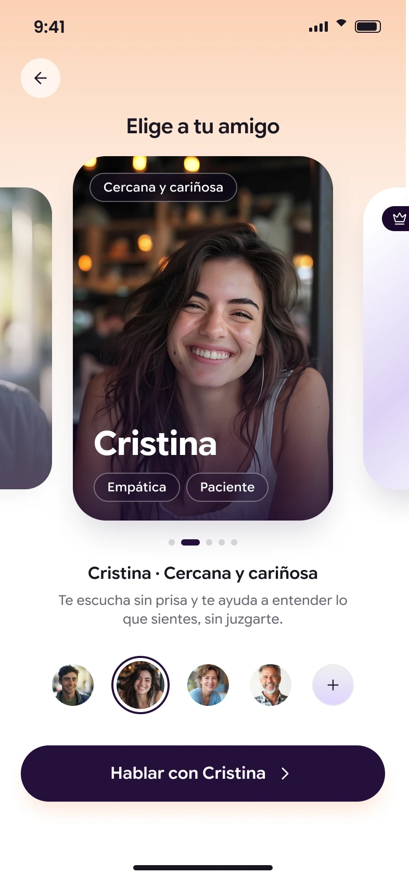
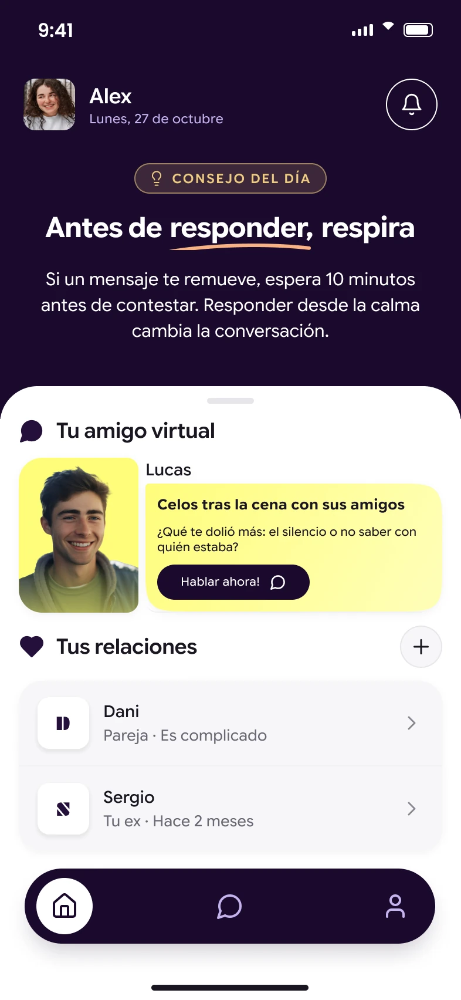

«Mis amigas tienen su vida, ya no atienden a mis preocupaciones. No tenía con quién hablar».
Amigos personalizables5 amigos principales
Una app,
un amigo de IA
y todo por contar.
Después de una relación larga, volver a empezar puede sentirse extraño. Habla con Cuorami y encuentra ideas, confianza y pasos concretos para volver a ilusionarte.
O úsala desde el navegador9:41
LucasDirecto y sincero
···
Lucas
¡Hola, Alex! ¿Cómo te sientes hoy? Tómate tu tiempo.
Alex
Me apetece volver a conocer a alguien. Pero no sé por dónde empezar.
Lucas
Podemos ir poco a poco. ¿Qué te gustaría recuperar primero: hacer planes o sentirte más segura al hablar con alguien?
Alex
0:14
Transcripción«Volver a hacer planes. Mis amigas tienen otra vida y me da apuro proponer algo.»
Lucas
Es muy normal sentir ese apuro. Empecemos por algo que te apetezca a ti: ¿qué disfrutas hacer cuando tienes un rato libre?
⌁Escribe lo que sientes…
9:41
Cuorami
Tu espacio empieza aquí
Crea tu cuenta para que tu amigo pueda conocerte y acompañarte a tu manera.
- Conversaciones privadas y cifradas
- Un amigo que se adapta a ti
- Tú controlas tus datos y tu memoria
Lo que puedes esperar
Ver cómo funciona
Volver a empezar,
paso a paso.
Empieza por lo que te apetece ahora. Lo demás, poco a poco. Elige un paso y míralo en el móvil.
- 1
Descarga la APP
Desde tu móvil o desde el navegador. No necesitas saber de inteligencia artificial: empieza escribiendo un mensaje, como harías en cualquier conversación.
Mira cómo se instala y se abre en el móvil. - 2
Cuéntale cómo estás
Selecciona cómo te encuentras en este momento, sin filtros y sin explicaciones. ¿Qué necesitas?
- 3
Selecciona tu Cuorami
Selecciona entre los perfiles disponibles o personaliza el tuyo. Tú decides cuál encaja más contigo.
- 4
Habla de lo que te preocupa
«No sé dónde conocer gente». «Me da apuro escribirle». Empieza por esa duda que te ronda la cabeza y explora qué podrías hacer a continuación.
- 5
Algo empieza a moverse
Descubre sitios, personas, herramientas. Vuelve a conocer dónde y cómo, el con quién llegará. Cuorami te acompaña en todo ello.
Paso 1: Descarga la APP
Quiero dar el primer paso Puedes probarlo gratis.
Descarga la APP
Un paso cada vez01 / 05
9:41
CuoramiCuoramiSin anuncios · Compras en la aplicación
NuevaRecién llegada
GratisPara empezar
3+Para mayores de 3 años


Acerca de esta app
Habla con un amigo virtual que te escucha sin juzgarte y te ayuda a dar pasos para volver a la vida sentimental.
Estilo de vidaSocialBienestar
9:41
CuoramiTu espacio empieza aquí
Crea tu cuenta para que tu amigo pueda conocerte y acompañarte a tu manera.
- Conversaciones privadas y cifradas
- Un amigo que se adapta a ti
- Tú controlas tus datos y tu memoria
9:41
Qué bueno tenerte de vuelta
Tu espacio sigue aquí, tal y como lo dejaste.
¿Has olvidado tu contraseña?
Iniciar sesión
o continúa con
¿Todavía no tienes cuenta? Crear cuenta
9:41
CuoramiConfigurando tu espacio · 3 de 7
Elige una opción
Escribe otra respuesta…
9:41
Elige a tu amigo
Lucas · Directo y sincero
Hablar con Lucas
Te dice las cosas claras, con cariño pero sin rodeos. Ideal para tomar decisiones.
9:41
LucasDirecto y sincero
¿Sobre quién es?
Se transcribirá automáticamente
Descarga la APP· Desliza para cambiar de paso
Quizá tú también te has sentido así
No eres la única
que vuelve a empezar.
Situaciones distintas. Las mismas ganas de encontrar un punto de partida.
«No quería contárselo a nadie de mi entorno. Necesitaba un sitio donde empezar a hablar».
«Necesitaba sentirme cómoda y no juzgada. Ha sido la mejor manera de abrirme sin miedo».
«No sabía ni por dónde empezar. Llevaba años sin conocer a nadie. El mundo ha cambiado y yo me lo había perdido».
«Para mí era un problema el sentirme segura, Cuorami me ayudó con ese mensaje para dar el primer paso».
«Llevaba demasiado tiempo esperando a que surgiera algo. Me apetecía volver a intentarlo».
Mostrando historias 1 a 3 de 6
Un poco de apoyo para tu nueva etapa
Por qué deberías
probar Cuorami.
Para hablar de lo que te pasa y encontrar un primer paso que se sienta tuyo.
01 · UN ESPACIO PARA TIEso que no te apetece
Eso que no te apetece
contarle a nadie.
Puedes hablar de lo que te preocupa sin dar explicaciones a tu entorno. Incluso de esas dudas que te da apuro decir en voz alta.
Escribe como hablarías. Sin filtros. Sin juicios.
CuoramiTu espacio para hablar
Privado02 · ORIENTACIÓN CONCRETADe las dudas
De las dudas
a un primer plan.
Dónde conocer gente hoy, cómo retomar una conversación, qué decir en un primer mensaje. Opciones reales que encajen con tu vida y esta etapa.
No teoría. Pasos que puedes dar tú.
9:41Ideas para esta semana
Un paseo en compañíaCon gente con la que compartir el caminoPlan
Aprender algo nuevoLa conversación surge haciendoTaller
Una afición compartidaUn tema por el que empezarClub
03 · CONFIANZA, PASO A PASOVuelve a sentirte segura.
Vuelve a sentirte segura.
Sin dejar de ser tú.
No tienes que forzarte ni convertirte en otra persona. Puedes ir aclarando lo que quieres y probar pequeños pasos con los que te sientas cómoda.
Tus decisiones, tus tiempos, tu ritmo.
Puedes empezar siendo tú.
04 · TOTAL PRIVACIDADNadie tiene que saber
Nadie tiene que saber
que estás usando Cuorami.
Ni tus hijos, ni tu ex, ni tus amigas. Lo que cuentes se queda entre tú y tu Cuorami.
Sin rastro. Sin conversaciones incómodas.
Texto de privacidad propuesto, pendiente de validar con las condiciones reales del producto.
Tu espacio seguro.
Solo para ti
Cuorami en cifras
Dar el paso se nota.
Cifras de la propuesta pendientes de validar: base de usuarias, periodo y método de medición.
de satisfacción entre las nuevas usuarias.
vuelven a hablar con su amigo virtual.
recomendaría Cuorami a una amiga.
encuentran pareja después de practicar.
Encontrar un punto de apoyo
El mismo punto de partida.
Otra forma de avanzar.
Puedes empezar hablando de lo que te cuesta. El siguiente paso lo decides tú.
Un acompañamiento para empezar
Con Cuorami
- Conocerás nuevas herramientas para relacionarte.
- Tendrás un espacio donde hablar de lo que te preocupa.
- Encontrarás orientación práctica, paso a paso.
- Podrás pedir ayuda con discreción, sin contárselo a tu entorno.
- Explorarás planes y formas de conocer gente que encajen contigo.
- Podrás probarlo gratis antes de decidir.
Sigues como estás
Sin Cuorami
Te quedas igual que como estás ahora.
Cuorami te ayuda a orientarte. Las relaciones las construyes tú, a tu ritmo y con las personas que elijas.
Es normal tener preguntas
Antes de empezar,
hablemos de tus dudas.
Cuorami está pensado también para ese momento. Después de una relación larga, puede costar saber dónde conocer gente o cómo volver a iniciar una conversación. No necesitas experiencia reciente para empezar a hablar de ello.
No. Funciona como una conversación normal: escribes lo que te preocupa y vas hablando con tu Cuorami. Puedes usarlo desde la APP o desde el navegador.
Hablas con una IA conversacional pensada para orientarte en cuestiones sentimentales y ayudarte a explorar tus opciones. Cuorami no es una pareja ni una persona de tu entorno. Es una herramienta de apoyo para volver a relacionarte fuera de la pantalla.
Cuorami está centrado en las relaciones y las dudas que aparecen al volver a conocer a alguien. La experiencia está organizada para que puedas hablar de tu situación, elegir tu acompañante y encontrar orientación concreta sin tener que aprender a preparar instrucciones para una IA.
No necesitas contarle a tu entorno que usas Cuorami. Si quieres saber cómo se tratan tus conversaciones o qué información se conserva, pregunta al equipo antes de empezar. Poder decidir con información también forma parte de sentirte cómoda.
Puedes decirlo, explicar qué no encaja contigo y explorar otra opción. Una orientación no es una orden: tú decides lo que te apetece intentar, lo que no y cuándo dar cada paso.
Sí. Puedes probar Cuorami gratis antes de decidir si quieres seguir. Al empezar podrás consultar las condiciones de la prueba y elegir si la experiencia te encaja.
¿No encuentras tu duda? Tengo otra pregunta
Prueba Cuorami.
¿Tienes alguna duda? Cuéntanos cómo podemos ayudarte a empezar.
No tienes que contar aquí tu historia personal. Basta con que nos digas qué te gustaría saber.
CuoramiTe responde en un momento